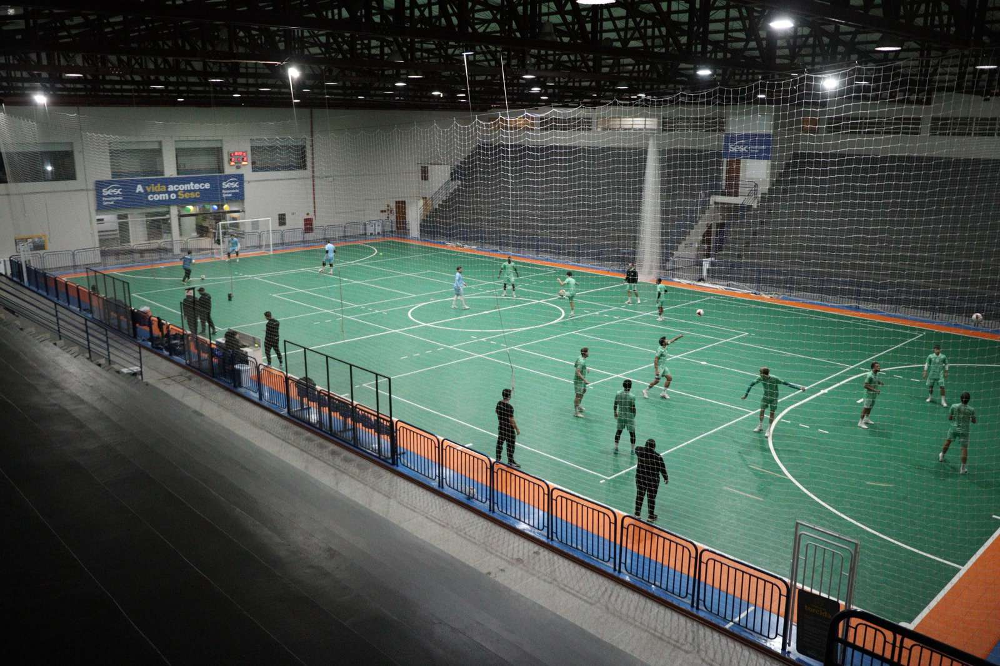
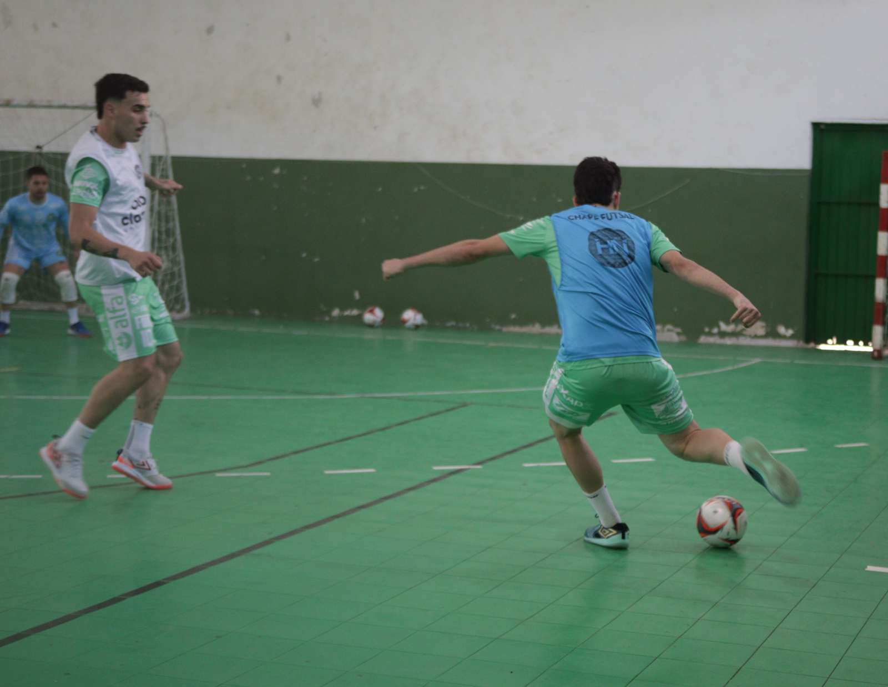
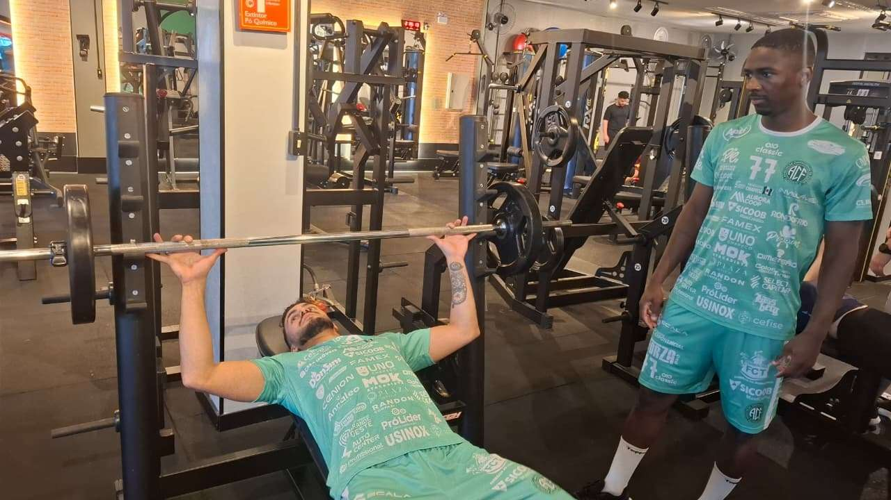
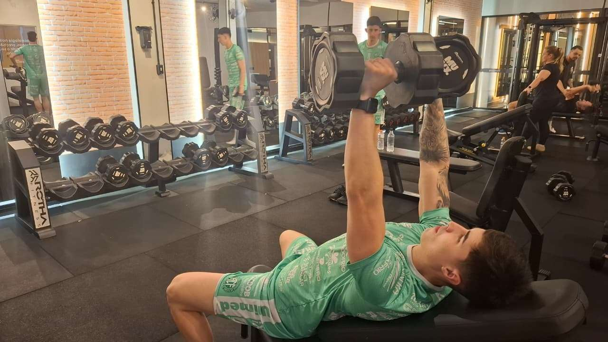

A Prefeitura de Chapecó/Chapecoense/Unochapecó entra em quadra neste sábado (21), às 16h, para o compromisso mais importantes da temporada até o momento. O Verdão das Quadras enfrenta o Atlético-PI, no ginásio do SESC, em Chapecó, pelo jogo de ida da semifinal do Campeonato Brasileiro de Futsal. A equipe busca uma vaga inédita na decisão da competição nacional.
Uma vitória diante da torcida dará à Chape Futsal a vantagem de jogar pelo empate na partida de volta, em Teresina (PI). Por isso, o objetivo é construir um resultado positivo em casa para levar a vantagem ao confronto decisivo.

O técnico Agnaldo Pereira ressalta a importância de uma grande atuação neste primeiro encontro e do apoio vindo das arquibancadas. “É de suma importância que a gente jogue bem, que convença e traga o torcedor para o nosso lado. Temos o objetivo de chegar à final”, acrescentou.
Esta é apenas a segunda participação da Chapecoense no Campeonato Brasileiro e, pelo segundo ano consecutivo, a equipe figura entre as quatro melhores do país. Em 2025, o próprio Atlético-PI foi o adversário na semifinal e acabou conquistando o título nacional.

Na atual edição, a Chape Futsal garantiu a classificação ao superar o Criciúma nas quartas de final. Já o Atlético-PI eliminou o Sorriso (MT).

Ingressos e ação solidária
Os ingressos custam R$ 25 no primeiro lote, R$ 30 no segundo e R$ 15 para quem tem direito à meia-entrada por lei. Sócios têm acesso mediante apresentação da carteirinha, enquanto crianças até 12 anos não pagam, desde que acompanhadas por um responsável e apresentando documento de identificação.
Todos os torcedores, incluindo sócios e quem possui cortesia, devem levar 1 kg de alimento não perecível. As doações serão destinadas ao programa Mesa Brasil, do Sesc, que desenvolve ações de combate à fome e ao desperdício de alimentos.

Como comprar
Os bilhetes podem ser adquiridos pelos sites chapecoensefutsal.com.br e ingressojogo.com.br, além da Loja Chape Futsal Oficial, anexa à Classic Uniformes, na Rua Paulo Marques, e da iXap Sports, na Avenida Getúlio Vargas. Também haverá venda no ginásio antes da partida.
Diante da grande procura, a Chapecoense Futsal recomenda a compra antecipada e convida a torcida a comparecer ao Sesc para apoiar a equipe na busca pela inédita classificação à final do Campeonato Brasileiro.
Crédito das fotos: Chape Futsal